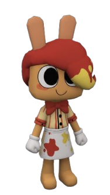
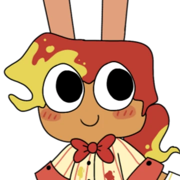

<!doctype html><html lang="en"><meta charset="utf-8"><meta name="viewport" content="width=device-width,initial-scale=1"><title>Nugget — rig and VN portraits</title>
<style>*{box-sizing:border-box}body{margin:0;background:#2c2927;color:#f1e8dd;font:15px system-ui,sans-serif}main{max-width:1100px;padding:28px;margin:auto}h1{font-size:26px;margin:0 0 8px}p{line-height:1.6;color:#d2c8ba}.row{display:flex;gap:25px;flex-wrap:wrap}.stage{width:340px;height:600px;background:#686563;border:1px solid #958d82;position:relative}.stage>div,.stage>img{position:absolute;inset:0;width:100%;height:100%;object-fit:contain}aside{flex:1;min-width:260px;max-width:600px}button{font:inherit;background:#59462e;color:#fff;border:1px solid #aa8b5e;padding:10px;cursor:pointer}button.on{background:#95652c}nav{display:flex;gap:6px;flex-wrap:wrap;margin:18px 0}label{display:block;margin:18px 0}.portraits{display:grid;grid-template-columns:repeat(4,1fr);gap:12px;margin-top:25px}.portraits figure{margin:0;background:#575351;border:1px solid #7e7770;text-align:center;padding:12px}.portraits img{width:100%;height:270px;object-fit:contain}.portraits figcaption{margin-top:8px}a{color:#ffd48f}small{line-height:1.7;display:block;color:#c7bdaf}@media(max-width:700px){.portraits{grid-template-columns:repeat(2,1fr)}.portraits img{height:230px}}</style>
<main><h1>Nugget</h1><p>SS Tank / Support · Frontline · Hotdog protection</p><div class="row"><div class="stage"><div id="rig"></div></div><aside><nav id="buttons"></nav><label><input id="off" type="checkbox"> Animations off — show supplied static art</label><label><input id="pause" type="checkbox"> Pause</label><p id="text"></p><p>His combat kit works with any team. Cody is his boyfriend and Jessie is his older sister; those relationships appear in dialogue.</p><small>This page previews artwork and rig motion. The in-game skill preview runs actual combat. Current Hotdog stock and Protective Instinct counts appear in the game's status chips.</small><p><a href="NUGGET-README.md">Implementation notes</a></p></aside></div><div class="portraits" id="portraits"></div></main>
<script src="Characters/Nugget/rig-data.js"></script><script src="js/rigs/nugget-rig.js"></script><script>
const rig=NuggetRig.create(document.getElementById('rig'));let mode='idle',phase=0,last=performance.now();
const texts={idle:'A friendly, relaxed stance with a small ear wag.',walk:'A light trot.',delivery:'Hotdog Delivery! — offer food and protection.',toppings:'Extra Toppings — choose a serving.',guard:'Good Dog! — rush to protect a teammate.',counter:'A short defensive headbutt.',pack:'The Whole Pack! — everyone gets looked after.',rescue:'Unconditional Protection — emergency interception.',hurt:'A short hit reaction.'};
for(const state in texts){const b=document.createElement('button');b.textContent=state;b.onclick=()=>{mode=state;phase=0;document.getElementById('text').textContent=texts[state];document.querySelectorAll('#buttons button').forEach(x=>x.classList.toggle('on',x===b));};document.getElementById('buttons').append(b);}document.querySelector('button').click();
for(const id of ['Nugget','Cody','Jessie','Dango']){const f=document.createElement('figure'),im=document.createElement('img'),c=document.createElement('figcaption');im.src='Characters/'+id+'/vn.webp';im.alt=id+' supplied VN portrait';c.textContent=id;f.append(im,c);document.getElementById('portraits').append(f);}
document.getElementById('off').onchange=e=>{document.getElementById('rig').hidden=e.target.checked;document.getElementById('still').hidden=!e.target.checked;};
function frame(now){const dt=Math.min(.1,(now-last)/1000);last=now;if(!document.getElementById('pause').checked){phase=(phase+dt)%1.5;const style={delivery:'nuggetDelivery',toppings:'nuggetToppings',guard:'nuggetGuard',counter:'nuggetCounter',pack:'nuggetPack',rescue:'nuggetRescue'}[mode];rig.update({moving:mode==='walk',animState:style?'cast':'idle',animStyle:style,animT:1.5-phase,animDur:1.5,hitT:mode==='hurt'?.1:0},dt);}requestAnimationFrame(frame);}requestAnimationFrame(frame);
</script></html>
